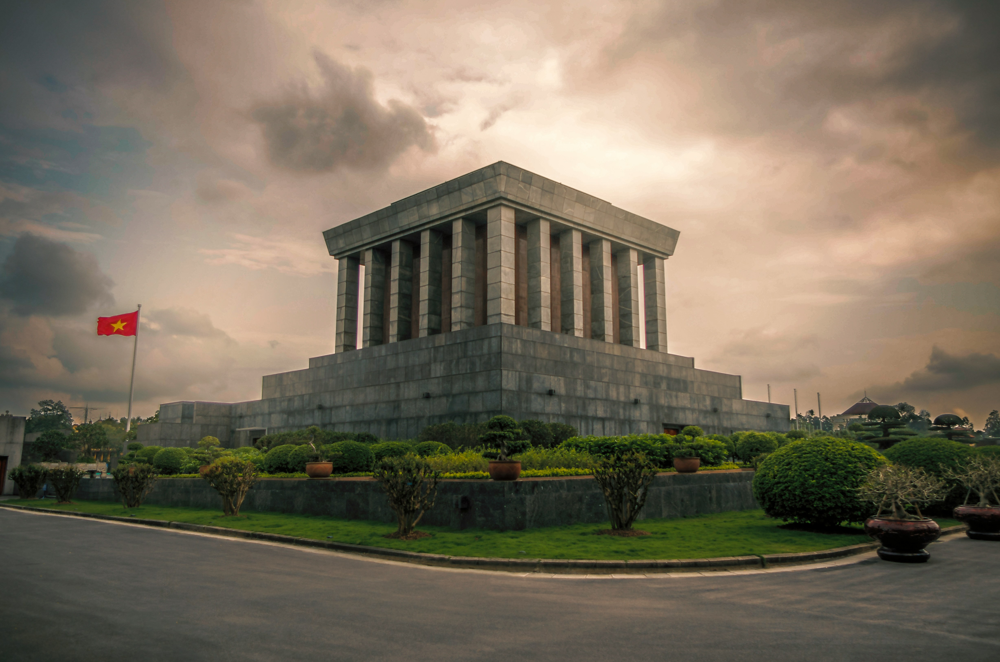
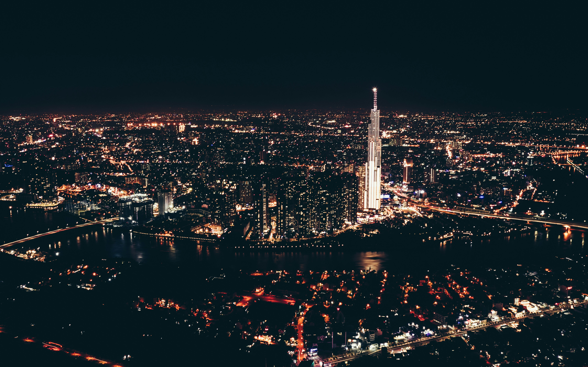
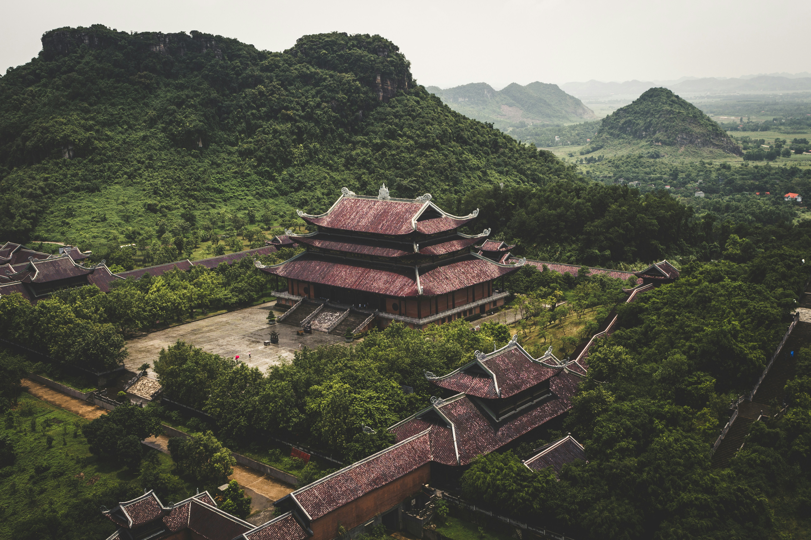
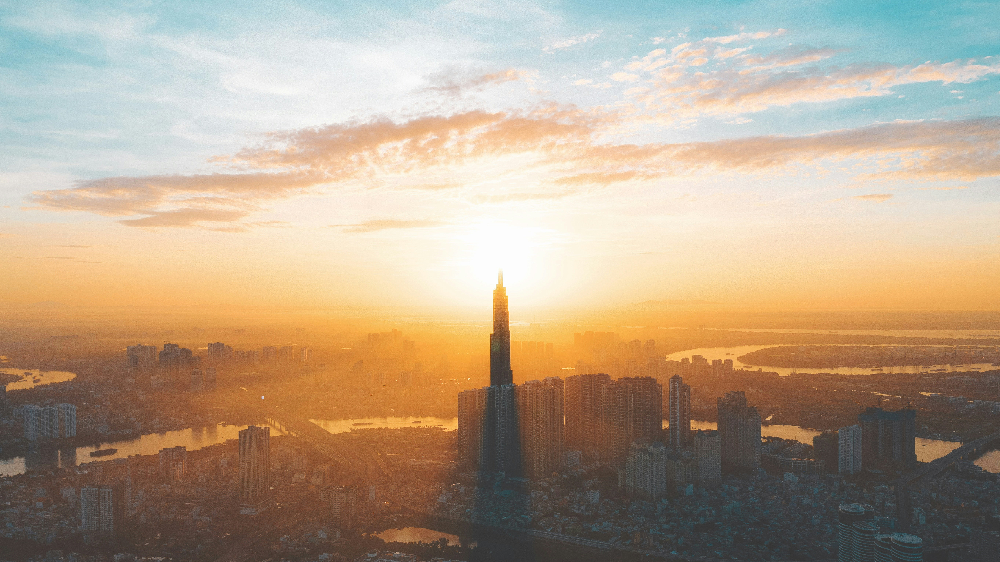

-

Building
Ho Chi Minh Mausoleum
Ho Chi Minh Mausoleum is a mausoleum which serves as the resting place of Vietnamese revolutionary leader and President Ho Chi Minh in Hanoi, Vietnam.
-

Bridge
Dragon Bridge
Dragon Bridge is a bridge over the River Han in Da Nang, Vietnam.
-

Bay
Ha Long Bay
Ha Long Bay is a UNESCO World Heritage Site and popular travel destination in Quảng Ninh province, Vietnam. The name Ha Long means "descending dragon".
-

City
Ho Chi Minh City
Ho Chi Minh City - known as Saigon City in Vietnam.
-

Skyscraper
Landmark 81
Landmark 81 is the tallest building in Ho Chi Minh City, Vietnam and the second tallest building in Southeast Asia.
-

Night City
The city that never sleeps
Ho Chi Minh City is the vibrant, youthful, bustling day and night - known as "City does not sleep".
-

City
Ninh Binh City
Ninh Binh Province is located in Northern Vietnam.
-

Railway
Hanoi Train Street
The narrow street is flanked by buildings and cafes, with a train track running straight down the middle. When the train comes through, it's like a scene from a movie as people scramble to clear the tracks and avoid being run over.
-

Sunset
Beautiful time in Vietnam
City Skyline during Sunset with Cloudy Sky.